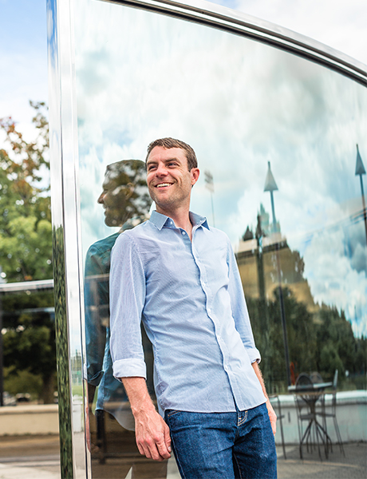

BRENDAN HOFFMAN | Covering Conflict
Brendan dabbled with photography in high school and studied art history in college, but it wasn’t until he took a short course in documentary work, at the International Center of Photography in New York City, that he felt compelled to build a career as a photojournalist. “I wanted to see more of the world with my own eyes,” he says.
Now Brendan’s lens gives us an inside look at one particular area of the globe. During the early days of his professional life, based in Washington, D.C., and covering rallies, protests, and political campaigns, he took a trip to Azerbaijan and was immediately captivated by the former Soviet state. “We have a lot of Cold War prejudices about that region still,” Brendan explains. “It is exceptionally complex and poorly understood—but extremely important.” A Kathryn Davis Fellowship for Peace helped Brendan improve the Russian he needs to understand the complex dynamics of the region.

Now based in Ukraine, Brendan covers political turmoil, war, and daily life for the New York Times, the Washington Post, Al Jazeera, and other media outlets. His career in the region was kick-started in early 2014, when political protests in Kiev escalated. At the time he was in Moscow taking Russian language classes and working with a photo agency. He had recently won a grant from the Pulitzer Center on Crisis Reporting to make a film about a Russian town home to an asbestos mine.
When he headed to Ukraine to cover the protests for Getty Images, he figured he would encounter the usual protest scenario. Instead, he found himself covering a violent revolution. When police opened fire on protesters, Brendan didn’t immediately comprehend the severity of the situation. “I wasn’t prepared for what I was seeing,” he says. Then bullets began to spray the wall above his head, and the reality hit him. “I went in thinking I was covering a protest, but it turned into a war right under my feet.”
“The job of a photojournalist is to be the
eyes of the world.”
In the ensuing weeks and months, Brendan traveled back and forth from Moscow to Ukraine to cover the conflict. In the span of three weeks of particularly intense fighting between the government and Russian-backed separatists, he had five images on the front page of the New York Times. It was the pinnacle of his career. “To cover an important story and have people see the results is what you hope for as a photojournalist,” he says. “It’s validation that what you’re doing is worth people’s attention. If you know that every morning there is a chance that millions of people are going to look at your images, you’re going to work pretty hard.”
But the validation was more than a professional boost for Brendan. On a deeper level, it affirmed his belief in the power of images to bridge cultural and political divides. “Photographs have a really unique ability to transcend languages and perspectives,” he says. “The job of a photojournalist is to be the eyes of the world—to bring into view other lives and cultures, to humanize foreign or abstract ideas, to speak by listening and watching.”